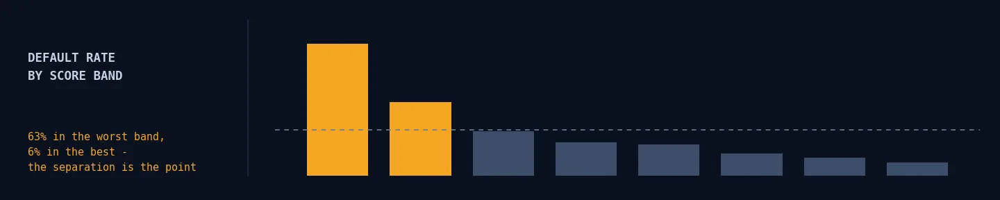
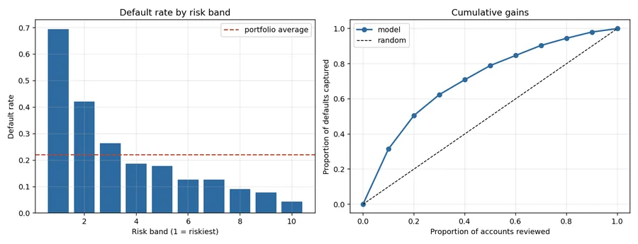
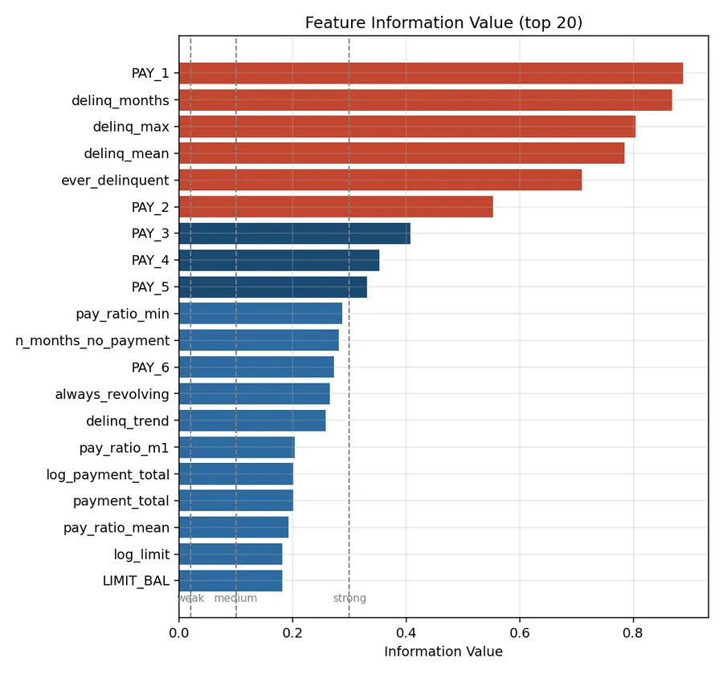

Lending · scorecards · fairness
Credit Risk Scorecard
Approving everyone loses NT$8.09M. The model turns that into +NT$11.50M — and the interpretability tax is just 0.014 AUC.

The modelling is the easy half. The parts that decide whether a credit model can ship are whether you can explain a decline, whether the cut-off is defensible, and whether the model treats protected groups comparably.
The number that justifies the model is not AUC
| Held-out portfolio outcome | Value |
|---|---|
| Approval cut-off | P(default) < 0.155 |
| Approval rate | 56.9% |
| Recall on defaulters declined | 73.5% |
| Portfolio profit | +NT$11.50M |
| Profit if everyone were approved | −NT$8.09M |
| Value created by the model | NT$19.59M |
Approving every applicant loses money on this portfolio — the default rate is high enough that unselected lending is unprofitable. That is more informative than any AUC.
The cut-off comes from arithmetic, not from 0.5. With a 15% net interest margin and 65% loss given default, break-even risk is p* = 0.15 / (0.15 + 0.65) = 0.1875. A grid search maximising realised profit on validation independently lands on 0.155 — close to theory and slightly conservative, which is a useful check that the profit function and the threshold search agree.

PAY_1 dominates, and that is worth being honest about
Ranked by Information Value, PAY_1 (most recent repayment status) scores 0.888 and three engineered delinquency features follow close behind. An IV above 0.5 conventionally means "check for leakage".
This is not leakage. PAY_1 is September's repayment status and the target is default in October — genuinely observable at decision time.
But it does mean something less flattering: the model is largely answering "is this account already behind?" rather than "will a currently-healthy account go bad?" The second question is the commercially valuable one, and this dataset barely supports it. SHAP agrees — PAY_1 and delinq_max together account for roughly half of all attribution mass.

The interpretability tax, quantified
| Metric | Scorecard (WoE + logistic) | Gradient boosting |
|---|---|---|
| ROC AUC | 0.7630 | 0.7770 |
| KS statistic | 0.4025 | 0.4167 |
| Brier score | 0.1380 | 0.1350 |
The interpretability tax is 0.014 AUC. That is the honest trade: the scorecard is line-by-line auditable, converts a decline into "your score was reduced primarily by months of delinquency", and satisfies a model-risk review. The boosted model is measurably better at ranking and cannot do any of that without SHAP bolted on.
Quantifying the gap is what lets a credit committee make the call, instead of the modeller making it for them.
Feature selection is two-stage: drop anything below an IV floor, then greedily prune correlated features, strongest IV first. That second step matters — six monthly utilisation ratios move together by construction, and left alone they split one effect across several coefficients, making the points table read as though the same fact is being charged for repeatedly. 50 features became 28.
Fairness: measured, not assumed
Sex, age, marital status and education are excluded from the model matrix. That is necessary but not sufficient — correlated features carry the same information, so the only way to know is to measure outcomes.
| Attribute | Parity ratio | Four-fifths | Equal-opportunity gap | AUC gap |
|---|---|---|---|---|
| Marital status | 0.988 | PASS | 0.028 | 0.015 |
| Sex | 0.920 | PASS | 0.046 | 0.031 |
| Age | 0.904 | PASS | 0.057 | 0.031 |
| Education | 0.863 | PASS | 0.042 | 0.042 |
All four clear the four-fifths screen. But "passes" is not "no issue". Education shows an 8.5pp approval-rate gap — 61.5% for graduate-school applicants against 53.1% for high-school applicants — and the largest AUC gap. The model ranks worst for the group it approves least (0.747 against 0.789), so its errors are concentrated where they hurt most.
Three measures are reported rather than one because they disagree by design. Demographic parity ignores real differences in risk; equal opportunity looks only at applicants who would repay — the error that actually harms a creditworthy person; per-group AUC catches a model that hits parity while ranking one group close to randomly.
What this does not support
- This is a behavioural model, not an origination model. It scores accounts with six months of history; a real application scorecard sees a bureau file and an application form, and the strongest features here would not exist.
- PAY_1 dominance limits the practical value. Flagging accounts that are already delinquent is easy; the money is in identifying currently-healthy accounts that will go bad.
- AUC ≈ 0.78 is at the ceiling for this dataset. The gap to a real lender's model is data — bureau scores, income verification — not algorithm choice.
- No reject inference. The data contains only approved accounts, so the model is fitted on a censored population and would drift once its own cut-off changed who gets approved.
- The lending economics are illustrative — plausible for unsecured revolving debt, not measured from this portfolio.
- A fairness screen is not a fairness guarantee. The four-fifths rule is a US employment-law heuristic applied here as a smoke test; passing it does not establish compliance with any lending regulation.